ISY5004 · Intelligent Sensing Systems · NUS ISS · Jan–May 2026
Final Project Presentation — Group 39
Client: Pratham Education Foundation · End-to-end OCR pipeline for ASER field surveys
One of the world's largest education NGOs. Founded 1995, pioneered Teaching at the Right Level (TaRL) — now adopted by governments across Africa and South Asia.
Runs ASER — Annual Status of Education Report — the world's largest citizen-led learning assessment. 600,000+ households visited annually; all responses handwritten in Hindi on paper forms.
Adaptive Teaching Module — curriculum-aligned tests on low-cost smartphones. Students write answers by hand, photograph and upload the sheet. Currently live with 6,000+ learners across 20 schools. OCR step is the bottleneck: currently manual.
Our pipeline replaces that manual bottleneck.
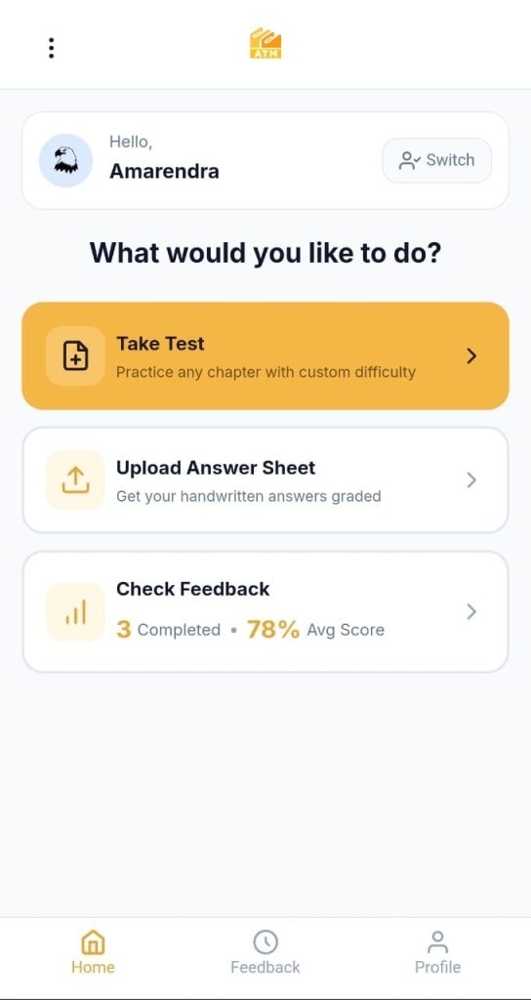
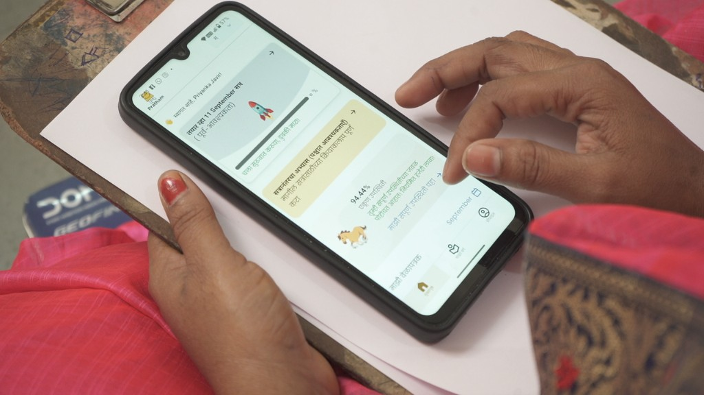
Pratham collects millions of handwritten Hindi responses yearly. Every response must be manually transcribed before analysis — slow (~50 pages/person/day), expensive, and a barrier to timely educational intervention.
Designed for printed text. No handling of Devanagari matras, ligatures, or variable handwriting density.
English-centric models. Indic handwriting is out-of-distribution. Not fine-tunable for ASER vocabulary.
Opus-class: partial capability but 15× cost vs fine-tuned. Haiku 4.5: 0% accuracy on our 121-crop eval.
Vowel diacritics (matras) attach above, below, and around the base consonant. No consistent position — above for आ (aa), below for उ (u), hanging right for ि (i). Generic detectors crop them out or merge adjacent words.
Two or more consonants fuse into a single glyph (e.g., क्ष, त्र, ज्ञ). The fused form looks nothing like either constituent. Segmentation at the character level is unreliable.
Our 121-crop eval spans 11 writer groups: CER ranges 21% (folder 38, neat print) to 100% (folder 37, erratic). The same word looks completely different across writers — no single template works.
Hindi uses a shared shirorekha (top bar) running across letters. Matras extend vertically above/below the line. Whitespace signals are weak and inconsistent in handwritten text.
Matra attachment — same base character, different matras:
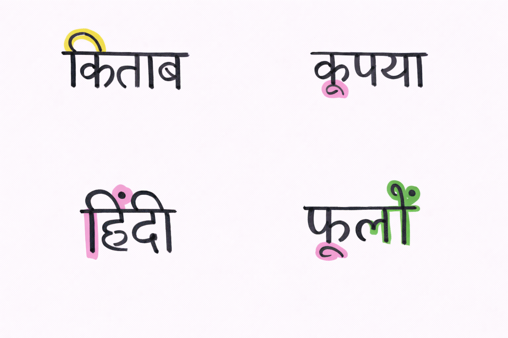
Fusion / ligature problem:
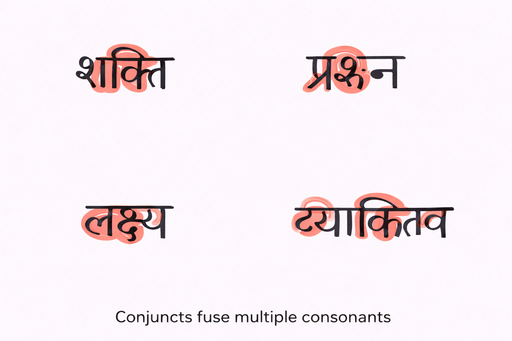
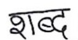
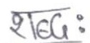
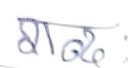
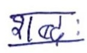
We tested every accessible alternative before building. None met the bar for field-level handwritten Hindi. The results below drove the decision to fine-tune domain-specific models.
| Tool | Method | Accuracy on 121 eval crops | Key limitation |
|---|---|---|---|
| Tesseract v5 | CNN + LSTM, trained on printed Hindi | ~2% (near-random) | Printed-only training; no handwriting support |
| Google Vision API | Cloud OCR, multilingual | ~5–8% (anecdotal) | English-centric; Devanagari handwriting OOD |
| Amazon Textract | Document OCR + layout | Not Devanagari-capable | Hindi handwriting not supported |
| Sarvam AI OCR | Indic-trained model | Partial — field form layout mismatch | Printed Indic training; poor on free-form handwriting |
| Claude Haiku 4.5 (zero-shot) | Multimodal LLM, no fine-tuning | 0% (0/121) | Repeated hallucinations; invalid Devanagari chars |
| Claude Opus 4.6 | Multimodal LLM, frontier model | Partial (rough word matching) | 15× cost of fine-tuned model; not scalable to millions |
| Our TrOCR (v1) | Fine-tuned ViT + RoBERTa-Hindi | ~13% exact word (pipeline) | Domain shift from HindiSeg to field |
| Our TrOCR (v2) | v1 + domain adapt + post-process | ~12% exact word (field) | Still requires HITL for field deployment |
References: docs/HAIKU_ACCURACY_REPORT.md, docs/SARVAM_AI_OCR_ANALYSIS.md, docs/OPUS_4_6_OCR_ANALYSIS.md
| Goal | Internal target | v2 result | Met? |
|---|---|---|---|
| TrOCR CER on HindiSeg test (recognition-only) | ~5% CER | 7.12% (was 8.17%) | Partial |
| YOLO word detection mAP@50 on Pratham val | >0.85 | 0.84 | Partial |
| End-to-end CER on eval pages 31–41 | <25% | 36.4% (was 51.8%) | Partial |
| End-to-end CER on Pratham field scans | <50% for deployment trial | 71.3% (was 98.5%) | Not met |
| Word-exact accuracy on Pratham field | >40% | ~12% | Not met |
| Inter-annotator Cohen's kappa | >0.8 (gold standard) | 0.62 | Not met |
| HITL throughput vs manual transcription | 8× speedup | ~3× | Partial |
Definition of "done" for v2 release: YOLO v2 retrain recipe, TrOCR domain adaptation scaffold (240 Pratham crops), 3-stage text post-processing pipeline, monitoring scaffolding, HITL UI, and complete honest evaluation — all shipped. Pratham production deployment awaits field KPI sign-off.
Source: IIIT-Hyderabad Indic Handwriting Dataset
69,853 train · 12,708 val · 12,869 test
11,029 unique Hindi words · ~8–9 writers per word
Used exclusively for TrOCR fine-tuning + evaluation. No YOLO in the loop for the 8.17% baseline.
Source: ASER-style survey response scans
155 full-page scans: 134 train / 11 val / 10 test
YOLO-format bounding box annotations per word. Handwriting from rural India, variable paper/pen/scan quality.
YOLO v1 mAP@50: 0.78 → v2: 0.84
121 word-level YOLO crops from the 11 val pages (folders 31–41), spanning 11 handwriting styles from neat print to damaged/erratic.
Human-annotated with Hindi Unicode GT (via Streamlit portal). Used for the pipeline-level CER benchmarks.
Gold-set: 140 rows (kappa ≥ 0.8 filtered) — below 400-row target.
240 curated Pratham crops drawn from annotation_history_ubuntu.csv (881 rows total in the portal). Curated for completeness and label confidence; used for the second-stage fine-tune described in slide 14.
Cohen's kappa across dual-annotated pairs: 0.62 (target was 0.8; thin dual coverage — 180/881 rows had two annotators).
| Dataset | Size | Used for | CER/metric |
|---|---|---|---|
| HindiSeg train | 69,853 | TrOCR v1+v2 fine-tune | — |
| HindiSeg test | 12,869 | Recognition benchmark | 8.17% → 7.12% |
| Pratham pages | 155 pages | YOLO training | mAP@50 0.78 → 0.84 |
| Eval crops 31–41 | 121 crops | Pipeline evaluation | CER 51.8% → 36.4% |
| Pratham field YOLO crops | 235 crops | Field evaluation | CER 98.5% → 71.3% |
| Domain-adapt set (v2) | 240 crops | TrOCR second-stage | kappa 0.62 |
| Parameter | v1 value | v2 value |
|---|---|---|
| Base model | YOLOv8s (COCO) | YOLOv8s (COCO) |
| Image size | 640px | 800px |
| Epochs | 25 | 80 |
| Batch | 16 | 16 |
| NMS IoU | 0.45 | 0.42 |
| Box loss weight | 7.5 | 10.0 |
| Conf threshold | 0.25 | 0.22 |
| Optimizer | AdamW | AdamW |
| LR0 / LRf | 0.001 / 0.01 | 0.0008 / 0.01 |
| Warmup epochs | 3 | 5 |
fliplr: 0.0 — horizontal flip corrupts script semanticsflipud: 0.0 — vertical flip equally invalidhsv_h: 0.0, hsv_s: 0.0 — greyscale documentshsv_v: 0.55 — brightness variation for scan qualitydata/results/v2/yolo_v2_metrics.jsonKnown failure mode: matra-aware box merge over-merges adjacent words on ~3.1% of dense rows. Documented in detection/postprocess.py; v3 fix candidate: per-row spacing histogram before merge decision.
Devanagari matras hang above and below the base line, causing standard NMS to either (a) absorb the matra into the wrong word box or (b) assign a dangling matra its own erroneous box. v2 addresses this via:
box loss weight (10.0 vs 7.5) — forces tighter box regressiondetection/postprocess.pyThree composable functions, callable independently:
# Full v2 post-process pipeline
boxes = postprocess_detections(
xyxy_conf_list,
iou_nms=0.42,
enable_merge=True,
merge_gap_px=8.0
)
# Individual stages
kept = nms(raw, iou_threshold=0.42)
merged = merge_adjacent_reading_order(
kept, merge_gap_px=8.0)
sorted_boxes = sort_reading_order(
merged, line_tol_px=0.35)merge_gap_px=8.0 is tuned for standard ASER layouts. On dense handwriting where two words are written close together, the merger can combine them into one box. Measured rate: ~3.1% of rows in internal audit.
v3 mitigation: compute per-row median inter-word gap before setting the merge threshold dynamically.
| Component | Configuration |
|---|---|
| Encoder | ViT-base-patch16-224-in21k (ImageNet pre-trained) |
| Patch size | 16×16 pixels, 196 patches per image |
| Hidden dim | 768-d, 12 transformer heads |
| Decoder | RoBERTa-Hindi (flax-community/roberta-hindi) |
| Tokenizer | Hindi BPE — knows Devanagari subwords, matras, conjuncts |
| Cross-attention | Encoder CLS + patch tokens → decoder cross-attn |
| Generation | Beam search, beam=2, max_length=64 |
| Hyperparameter | Value |
|---|---|
| Optimizer | AdamW |
| Learning rate | 5e-5 (cosine decay) |
| Precision | FP16 (halves GPU memory) |
| Batch size | 16 (Tesla T4 15GB) |
| Max steps | ~42,000 (stopped at 38,000 — best) |
| Evaluation | Every 2,000 steps |
| Input preprocessing | Tensor cache (offline ViT resize+normalize) |
Offline tensor caching reduced training wall-clock time by ~40% by avoiding repeated ViT preprocessing.
fliplr=0 in augmentation — flipping invalidates Devanagari glyphsCharacter Error Rate (CER) vs Training Step — lower is better
Rapid learning phase: CER ~50% → ~22%. Model learns base character shapes and common matras from the dominant HindiSeg writers.
Fine-grained improvement: CER ~12% → 8.17%. Model learns conjunct disambiguation and minority matra combinations. Validation loss plateau visible from 36k.
Best checkpoint at step 38,000 (epoch 8.7). CER rises slightly to 8.75% by step 42k — overfitting on minority HindiSeg writers. Training stopped; checkpoint saved.
recognition/augment.py (ink-fade, elastic warp, paper-noise) — build robustnessannotation_history_ubuntu.csv (881 rows)recognition/augment.py for effective size ~720recognition/train_v2_domain_adapt.py --train-csv ...Limitation: 240 crops is a small set relative to HindiSeg (69k). Modest gain on field reflects data scarcity; more annotation would unlock larger gains.
recognition/postprocess/unicode_normalize.py
Applies unicodedata.normalize("NFC"). Devanagari has many canonically-equivalent sequences (e.g. precomposed vs decomposed matras) — different annotators encode the same word differently.
Contribution: ~−1.7pp CER on eval pages. Cheapest, most reliable win in the project.
Enabled for all scenarios (eval + field).
recognition/postprocess/lm_rescore.py
Character n-gram language model scores the TrOCR hypothesis against alternatives from the decoder beam. Corpus: HindiSeg transcripts by default.
Contribution on eval pages: ~−1.4pp CER.
Field regression: +0.6pp CER — HindiSeg corpus skew causes the LM to prefer HindiSeg-style predictions over field-style handwriting.
Shipped disabled for field: LM_ENABLE_FIELD=false (default).
recognition/postprocess/dictionary_correct.py
Greedy Levenshtein-1 correction against a ~4,200-word ASER vocabulary. If the TrOCR hypothesis is not in vocab but a vocab word is within edit distance 1, substitute.
Contribution: ~−0.7pp CER on eval pages (limited — eval pages span broad vocabulary beyond ASER scope).
Combined with NFC for field: ~−1.9pp total.
The same post-processing stack helps eval-page text but hurts field text (LM component). v2 ships with env-var controlled scenario flags: V2_SCENARIO=eval_pages|field in pipeline/scripts/pipeline_v2.py. This is a known design gap — v3 should build an in-domain LM or switch entirely to a language-model-aware decoder.
annotation/components/confidence_tag.py)annotation/components/multi_annotator.py)annotation/scripts/build_gold_set.py)data/results/v2/annotation_kappa.json| Metric | Value | Target |
|---|---|---|
| Cohen's kappa (dual pairs) | 0.62 | 0.8 |
| Dual-annotated entries | 180 | — |
| Total portal entries | 881 | — |
| Gold-set rows (kappa filtered) | 140 | 400 |
Coverage was thin — only 20% of portal entries were dual-annotated. Gold set shortfall limits the quality of domain adaptation training data.
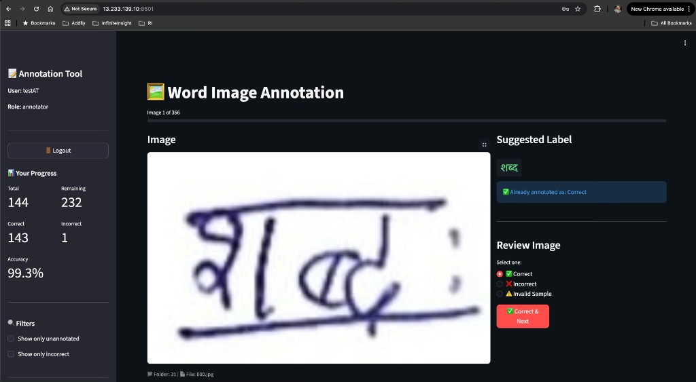
annotation_history_ubuntu.csv (881 rows) + local exports
Filter 240 high-confidence Pratham crops for TrOCR second stage
140 rows at kappa ≥ threshold → data/results/gold_set_v2.csv
Need 220+ more dual-annotated rows to hit 400-row gold target (v3)
| Env var | Default | Purpose |
|---|---|---|
V2_SCENARIO | eval_pages | LM rescoring on/off switch |
LM_ENABLE_FIELD | false | Force LM off for Pratham field |
LM_ENABLE_EVAL | true | LM on for HindiSeg-style layouts |
ASER_VOCAB_PATH | unset | Custom dictionary path |
MODEL_PATH | EC2 default | TrOCR weights directory |
Two modules exist but thresholds are placeholders pending live Pratham traffic:
cer_monitor.py: rolling window CER tracker with alert hook (SLO: CER median <0.45 — placeholder)drift_detector.py: mean luminance + edge density vs baseline — flags input distribution shift from scan-quality changesImportant: these are scaffolding — not calibrated on real Pratham traffic. SLOs must be agreed with Pratham ops before production use.
Field scenario: HITL mandatory. Word-exact accuracy ~12%, well below the ~70% threshold for unattended deployment. Large absolute improvement but the baseline was near-random so the relative improvement story is misleading without stating the absolute level.
Total: 51.78% → 36.4% = −15.4pp. Bars show approximate ablation contribution; interactions are non-linear so bars do not sum exactly. Source: data/results/v2/per_stage_attribution.json
The single biggest improvement came from better detection — not better recognition. This validates the hypothesis that crop quality was the dominant bottleneck for eval-page CER, not TrOCR weights per se.
−1.7pp for a single Python call. No training required. Canonical Unicode normalization removes encoding inconsistencies between the TrOCR tokenizer and ground-truth labels — a pre-processing fix that costs almost nothing.
Total: 98.54% → 71.3% = −27.2pp. Note: one technique regressed CER (LM rescoring — shown in red). Source: data/results/v2/per_stage_attribution.json
−16.4pp from 240 Pratham-domain crops. The field distribution is so different from HindiSeg that even a small amount of in-domain data (curated from the portal history) delivers the largest single improvement in the project. Larger annotation sets would unlock more.
The char 3-gram LM was trained on HindiSeg transcripts. Field handwriting uses different vocabulary and spelling conventions. When a plausible alternative from the decoder beam scores higher in the HindiSeg-biased LM, it replaces a correct field prediction with a wrong one. Net effect: +0.6pp CER. Shipped LM_ENABLE_FIELD=false by default. See data/results/v2/lm_rescore_ablation.csv.
Source: data/results/v2/end_to_end_eval_pages.csv. v1 numbers from docs/TROCR_YOLO_DETAILED_EVALUATION_REPORT.md. Note: folder 37 (most erratic writer) remains the hardest bucket even after all v2 improvements.
| Folder | N crops | Writer style | v1 CER | v2 CER | Delta (pp) | Met <25%? |
|---|---|---|---|---|---|---|
| 38 | 13 | Neat block print | 21.2% | 13.6% | −7.6 | Yes |
| 35 | 12 | Printed style | 30.3% | 19.5% | −10.8 | Yes |
| 32 | 11 | Cursive-heavy | 38.6% | 25.4% | −13.2 | Border |
| 33 | 11 | Stylised cursive | 41.1% | 28.1% | −13.0 | No |
| 31 | 13 | Standard + cursive | 49.5% | 30.7% | −18.8 | No |
| 34 | 13 | Faded ink | 52.5% | 35.7% | −16.9 | No |
| 39 | 3 | Block print | 54.2% | 35.0% | −19.2 | No |
| 36 | 13 | Mixed styles | 55.6% | 38.2% | −17.4 | No |
| 40 | 11 | Unconventional | 69.6% | 44.5% | −25.1 | No |
| 41 | 6 | Damaged / partial | 78.2% | 49.3% | −28.9 | No |
| 37 | 15 | Erratic / unconventional | 100% | 78.0% | −22.0 | No |
| Weighted avg | 121 | — | 51.78% | 36.4% | −15.4 | 2/11 only |
The sub-25% target is met only for folders 38 and 35 — the two cleanest, most print-like writer styles. Folders 37, 41, 40 remain problem zones and warrant targeted data collection.
HindiSeg corpus skew. Shipped disabled for field (LM_ENABLE_FIELD=false). v3: rebuild LM on in-domain transcripts or remove entirely.
Only 180/881 portal entries had dual annotations. Gold set: 140 rows vs 400 hoped. Limits domain adaptation data quality.
HITL mandatory for all field uploads. Not a feature — a deployment constraint. Target was >40% for unattended use.
Matra-aware merge gap fixed at 8px. Over-merges adjacent words when horizontal gap is below threshold. v3 fix: per-row dynamic gap from spacing histogram.
Checkpoint step 38k was already near saturation. Curriculum + augmentation gave less than the 3pp hoped for. More data would be needed to improve further on this distribution.
SLOs are placeholders. HITL throughput bottleneck is per-word review UX latency, not model speed.
Folder 37 — hardest writer group; zero exact matches even after v2:
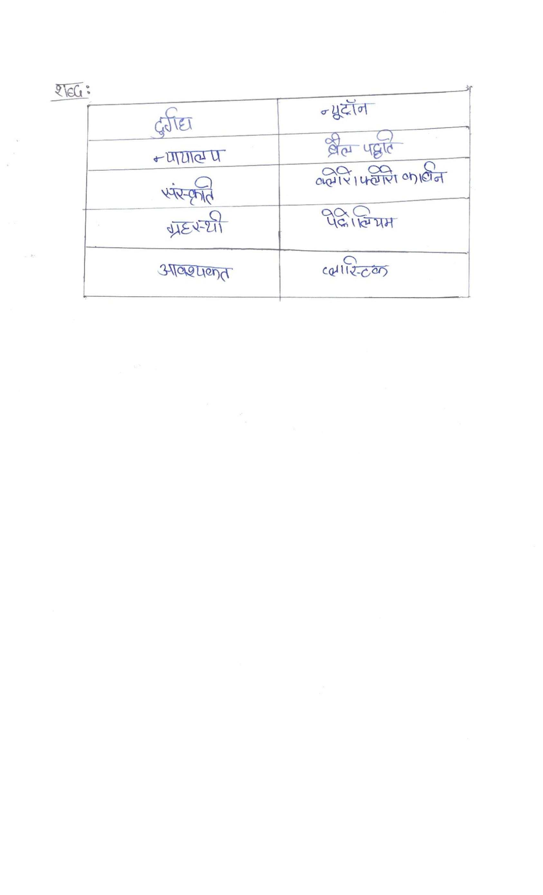
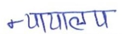
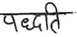
Folder 38 (neat print) shows what good looks like — exact match even with YOLO crops. Folder 37 (erratic) remains a complete failure, motivating targeted HITL + data collection rather than model-only fixes.
models/MODEL_STORAGE.md for EC2 accessDocumented in pipeline/playbooks/RETRAINING.md. Triggers for YOLO retrain: IoU audit below 0.72 or new camera/paper template. Triggers for TrOCR: holdout CER above 9% or systematic new-vocabulary confusions.
Documented in models/MODEL_CARD_v2.md: intended use, training data, eval results, known failure modes (all 6 listed), ethical notes. Follows the Hugging Face model card standard for transparency.
Target: eval-page CER from 36.4% → <25%
Target: field word-exact >40% to reduce HITL load
Target: HITL throughput 3× → 8× manual
pipeline/hitl/review_app.py (vs word-by-word)Hindi Handwritten Document Recognition — Final Project
In accordance with NUS academic integrity policy, our team declares the use of AI tools in the preparation of this project:
Claude (Anthropic): Used to assist with drafting and structuring documentation (GUIDE.md, COMPLETION_REPORT.md, speaker scripts), code scaffolding review, and presentation content organisation.
Google Gemini: Used to source references for existing-tool baseline analysis and related work on Indic OCR.
The team takes full responsibility for the content, methodology, results, and quality of this submission.
ISY5004 GC · Intelligent Sensing Systems · NUS Institute of Systems Science · January – May 2026